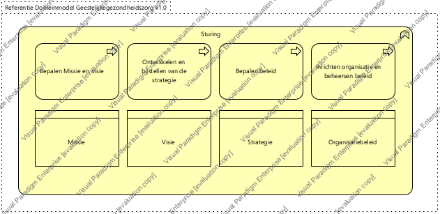

|
|
|
Generieke architectuur : Model . Architectuur : Package . Business architectuur : Package . Geestelijke gezondheidszorg : Package . Zorgprocessen - Geestelijke gezondheidszorg : Package
 ArchiMate Diagram - Sturing en verantwoording - Sturing (GGz)
ArchiMate Diagram - Sturing en verantwoording - Sturing (GGz)
 link
link
| Jump to: |
|  |
| Dit domein bevat de activiteiten voor het bepalen van de missie, visie, strategie en beleid van de organisatie, inclusief de inrichting en de beheersing hiervan. |